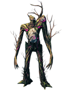
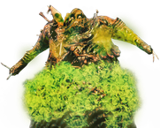
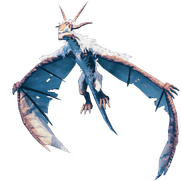
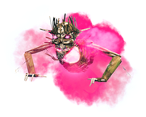
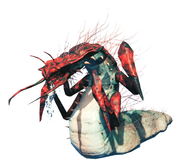
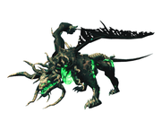
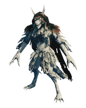
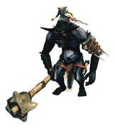
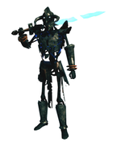

首领攻略
本站支持中英文站内搜索。带 ↗ 的链接指向外部网站；各页来源版本见页脚。
首领是英灵神殿各处独特的生物，生命值很高，伤害也与所在生态区相应地较高。
赤血灵鹿

赤血灵鹿是第一个首领，位于青青草原。
赤血灵鹿战斗不算难，主要检验玩家对基础机制的理解。建议具有休息好了状态，并准备当前最好的食物、护甲和武器。它不抗任何伤害类型，可用自己喜欢的武器。
木盾可格挡赤血灵鹿所有攻击。利用攻击间隙反击，可在三分钟内逐渐将其击杀。
简单方法是用弓，保持距离，绕祭坛大岩石射击。岩石会挡住前冲，但靠得太近时，范围闪电仍能命中。
古树长老


总生命值2500，对多数伤害类型无特殊抗性，但弱火。与所有首领战一样，装备当前最强护甲和武器，例如青铜装备，并食用最佳食物，成功机会最高。
处理袭击
藤蔓射击
祭坛周围四根柱子不可破坏，可躲在后面遮蔽。古树长老不会对近战范围内玩家使用此攻击。
踩踏
可格挡、跑开或利用翻滚的短暂无敌躲避。单人用满级青铜盾可完全格挡大多数踩踏而不踉跄。弹反或格挡技能18时，玩家不会踉跄。多人不一定如此，因为区域内每多一位玩家，敌人伤害提高4%。
生成树根
跑离召唤树根可能比攻击更好，它们过一会儿就会消失。
其他策略与说明
- 用弓远程攻击可能比近战更安全、简单。此阶段通常最好的弓是细木弓，最有效的箭是燃烧的箭。单人可能需要200支火箭，确切数量取决于弓技能。
- 可使用赤血灵鹿之力降低奔跑耐力消耗。
- 祭坛平台下方可全部挖空，平台会成为大型地下空间的坚固屋顶。下面足以容纳带工作台、熔炉和传送门的完整基地，古树长老乃至其他敌人都无法触及。
团队策略
- 分散站位可使远程藤蔓只针对一人，其他玩家便能专注攻击，而无需躲避。
- 古树长老通常攻击最近玩家，因此可指定一人担任前排，或轮换牵制者，帮助管理战斗。
- 多人近战攻击可造成大量伤害，但会面对更高踩踏风险。
- 多名玩家的火 伤害不会分别叠加，即敌人同时只能受到一种燃烧效果。
邪骨恶灵


对付他的攻击
- 战斗平衡以玩家使用树根面罩或抗毒蜜酒、降低75%毒伤害为前提。不使用非常危险，需要事先熟悉战斗才能避免中毒。
- 召唤随从：不优先处理可能被围攻。邪骨恶灵从腋下投出团块，通常瞄向远离玩家处，动画很慢，此时可攻击。也可后退，准备在生物落地瞬间击杀，鹿角战锤和铁大锤很有效。
- 毒云：近战玩家要完全避开，可能需在邪骨恶灵看似准备打喷嚏时立即跑开。翻滚可能太慢，也比奔跑更耗耐力。
- 近战：伤害很高并施毒，普通格挡很可能使玩家踉跄，承受剩余伤害。可弹反，或利用翻滚短暂无敌躲避，也可冲刺离开范围。
伤害类型
其他策略与说明
- 用锄头整平或抬高召唤祭坛周围地形，既能改善战斗移动，也能防止蚂蟥干扰。
- 建议准备多份中份治疗蜜酒和高生命值食物。
- 可用赤血灵鹿之力降低奔跑和跳跃耐力消耗。
- 制作约一百支霜箭，从树上高处射击，是安全、简单的击败方法。部分生成地点也有可登上的大型石塔。
- 使用抗毒蜜酒及双手棍棒，例如铁大锤或鹿角战锤，可轻松击败邪骨恶灵。铁大锤可在击败古树长老后获取。先召唤，再从后方爬上祭坛，利用武器大范围伤害攻击，并击退生成敌人使其落下，同时保持在首领攻击范围之外。但玩家仍可能中毒，抗毒蜜酒必不可少。
团队策略
最好让多数玩家专门在骷髅和软泥怪落地时立即击杀。随从虽有数量上限，但很高，最多同时8只骷髅和8只软泥怪。
三人或更多人若偏爱弓，即使没有冰霜箭也可远程战斗。虽然首领具有抗性，持续合力攻击仍能较快削减生命值。分散站位，使仅被追赶者需要跑开。随从生成后立即集中处理，最好换钝击近战迅速杀死，再换弓攻击首领。
冰霜龙母


与邪骨恶灵不同，冰霜龙母的所有攻击更容易躲避，不必穿顶级护甲。保持距离可无伤完成。弹幕可奔跑、翻滚、格挡或利用地形躲避。用锄头抬高地形形成柱子，是有效掩体。注意，其攻击具有伐木和采矿伤害，会摧毁天然岩石和树木。
要考虑武器损坏的可能，附近准备熔炉或传送门。冰霜龙母看见暴露的主要建筑可能攻击，但不会专门攻击墙和屋顶。临近日落开战会增加难度，因为夜间有星级狼或芬里等危险生物可能加入。
战前清除附近霜龙和石魔，避免它们加入造成额外威胁。精心挖沟或设置障碍可挡石魔，但难以完全挡狼。以重叠方式放置可牺牲的工作台，防止区域内生成，也可能分散冰霜龙母注意力。
收集仪式所需龙蛋时，可先放在召唤平台上而不献祭，避免占用携带重量。
近战
冰霜龙母虽常起飞，落地时近战能造成最大伤害。若找不到通向玩家的平坦路径，它通常不会多移动，直至再次起飞。
由于免疫冰霜，寒冰锤不如银剑乃至铁锤等其他近战武器。劈砍攻击容易用银盾弹反。玩家可能卡在龙身下方，使其攻击够不到而完全不受伤。
可食用中份治疗蜜酒快速恢复生命值，美味蜜酒和小份耐力蜜酒有助迅速补充耐力，继续攻击或闪避。
远程
冰霜龙母飞行及落地时都可被远程攻击。它不擅长穿越复杂地形，因此容易瞄准。
远程较安全，但慢得多。尤其单人要注意弓耐久，可能战斗结束前就损坏。不过，损坏后仍可转近战，无需中断。
箭的效果
箭的效果通常依次为毒针 > 黑曜石 > 火焰 > 毒素。冰霜龙母唯一弱点是火，但燃烧的箭伤害仍略低于黑曜石箭，只是火箭更容易制作。
毒箭可能造成高伤害，但重复施毒不叠加，通常浪费大部分伤害；不过尸鬼之牙弓的毒与毒箭会叠加。多人应确保每种持续伤害投射物仅由一人使用。最佳方式是一人轮换毒箭与蜂针箭或黑曜石箭，另一人轮换火箭与这些箭。
利用机制的打法（弓）
可在召唤平台地基周围挖坑藏身。召唤后立即跳入平台旁的坑，紧贴边缘。等冰霜龙母落地，再向上射箭，通常须几乎直向上以修正箭落点。玩家位于其下方，又有不可破坏物体遮挡，冰霜吐息和近战均无法命中，便可轻松获胜。
此策略建议带约300+支箭及满级弓，避免损坏，并准备眼激凌或敲克力冰沙等高耐力食物。
亚格鲁斯


袭击与能力
- 战斗平衡以玩家使用抗火大麦酒、降低50%火焰伤害为前提。不使用非常危险，护甲还会进一步降低火焰伤害。
- 陨石：可跑开或用石柱遮挡。近战亚格鲁斯时，也可留在其面前，因为头部会挡住大多数陨石。
- 新星：亚格鲁斯砸拳时，可利用翻滚短暂无敌躲避。
- 火焰吐息：亚格鲁斯仅对近战范围外玩家使用。向任一侧移动可躲避。石柱可遮挡，但会受伤，反复攻击最终会摧毁。盾也可格挡，但迅速耗尽耐力，效率不高。
近战策略
亚格鲁斯攻击间隙少，试图完全无伤会使战斗很长。具有邪骨恶灵之力、良好食物和适当护甲时，可暂时忽略攻击，直至生命值较低；该能力主要应对不速之客，因为首领物理伤害不多。否则最好翻滚躲新星，直接命中会造成巨大的伤害。
其他策略
- 召唤前确保祭坛附近无敌人。丑地精村庄可能紧邻祭坛，焦油坑也可能出现在附近。未提前清除，会使战斗大幅且不必要地变难。
- 霜箭是对亚格鲁斯造成伤害的最佳箭种。
- 亚格鲁斯从地下升起的开场动画期间，可自由攻击并背刺。
- 亚格鲁斯承受灵魂伤害，因此银剑和寒冰锤是不错武器。黑金属剑的高原始伤害也有效。
- 移动和抗火是关键，因此芬里套装可代替抗火大麦酒。但护甲较低，容易受其他平原敌人，尤其杀人蜂威胁，此策略更需要邪骨恶灵之力。
- 可在整个战场放置防生成部件，尝试阻止野生敌人在战中出现。营火和工作台较便宜，但可能被亚格鲁斯范围攻击，或范围外生成、被战斗声吸引的敌人摧毁。
- 祭坛下可挖隧道，安全恢复生命、修理武器或通过传送门离开。建营火可获得休息增益。确保营地足够深，避免首领攻击，尤其新星，因此应让它远离祭坛，以免意外摧毁营地。
- 目标超出一定距离时，亚格鲁斯不会使用吐息或陨石。玩家可站在这个安全位置射箭。
- 亚格鲁斯仅在完全浸没时获得潮湿，因此尝试使其具有冰霜弱点并不实际。
- 可持续绕祭坛周围石柱或石指移动，使首领保持在另一侧。它移动慢，追不上，玩家能无限保持隐蔽，再安全探头射箭。建议高耐久尸鬼之牙及数百支霜箭。被发现后，首领会停下咆哮并蓄力射线；蓄力完成前离开视线可取消攻击。
蛊虫之后


袭击与能力
- 蛊虫之后所有攻击都具有极高伤害和击退，即使成功弹反，也足以将玩家击飞至战场远处。
- 攻击判定范围极大，尤其扑咬，能命中身体侧方较远的玩家并施毒。
- 移动极快，边攻击边保持距离很困难。
- 战斗中持续生成邪蛛探索者，伤害很高。邪蛛幼虫单独不危险，但可能围住玩家，限制移动，使其被命中。
准备
- 轻羽斗篷非常有用，其轻羽之落效果让玩家被击落楼梯或高层后仍能轻易生存。没有它，高处作战极易因坠落死亡。它也让玩家能安全跳至下层，与首领拉开距离。
- 强烈建议携带冥火之光，否则几乎无法看穿笼罩底层的迷雾。
- 该如下 蜜酒 以下选择非常适合这场战斗：
- 蛊虫之后战斗区域的入口基本完全安全。你待在那里时，她不会攻击，只会在墙外徘徊。她的尾部偶尔会穿墙，反应快便可击中，但单靠这种方法会耗时极久。她生成的敌人会追进入口，不过在你离开前不会再生成更多，因此可在此安全恢复生命值。
- 此外，离开入口区域一段时间后，首领必会进行咆哮动画，玩家可趁机自由攻击。
- 入口外建小基地，有助快速恢复、刷新休息增益、修理和使用传送门。首领过一段时间才开始恢复生命，因此可离开、治疗后返回，不付出进度代价。
- 首领速度快且抗穿刺，使弓弩相对无效。希望远程作战的玩家可考虑下述魔法策略。
近战策略
- 甲壳护甲 是近身挑战蛊虫之后时推荐使用的护甲套装，因为它提供此阶段最高的护甲值，可在以下区域获得： 迷雾之地.
- 玩家也应穿羽毛披风，避免坠落伤害。
- 蛊虫之后的击退力极大，即使弹反成功，也几乎无法完整命中多数武器的三连击。尽管体型庞大，她转身很快，单个玩家也难以绕到背后。可使用强力单次攻击，例如以下武器的次要攻击： 克罗姆 是造成伤害最可行的方法。
- 首领靠墙或柱时，可站在它与障碍之间，缩短击退距离，争取完成三连击，并通常刚好来得及格挡下一次攻击。
- 也可用闪避应对攻击。命中前准确翻滚，可同时避免伤害和击退，保持最佳近战距离，并在下次攻击准备前命中两次。
- 长柄武器的次要旋转攻击适合快速清理邪蛛幼体，但首领抗穿刺，对它本身效果不佳。
- 歼灭者也很适合清幼体，甚至比长柄武器更好，因为楼梯等高低差不影响它，还能同时伤害首领，乃至穿过入口附近墙壁。说明，摧毁者起手比长柄武器次要攻击更慢，使玩家短暂暴露。虽然能穿墙，却并非入口墙战术的最佳武器，详见近战部分末尾。
- 近战玩家应选择最好的食物提升生命值，根据装备和策略也可搭配一些耐力食物。两种顶级生命食物加一种顶级耐力食物，能兼顾生命值和足够耐力，用于移动及躲避大量攻击。
- 邪骨恶灵之力 ，再搭配优良护甲和食物，可以有效承受她的攻击并反击；但要在能力持续的五分钟内击杀她，即便可行也十分困难。
- 等待邪骨恶灵之力冷却时，可在入口区域两端来回移动，使首领模型更频繁穿墙，提供更多免费攻击，抵消原本会发生的生命恢复。
- 如果接受利用游戏机制漏洞的打法，可在虫巢城堡入口的安全位置击杀蛊虫之后。她不会攻击入口内的玩家，但大锤和战斧仍可隔墙伤害她。
魔法策略
- 魔法使用者在此战中优势明显，因为可以尝试与蛊虫之后保持安全距离，从远处攻击。她大多数招式都是速度快、难以闪避的近战攻击，因此保持距离的同时输出很有帮助。
- 蛊虫之后对魔法攻击没有特别的抗性。
- 法师仍应优先躲避并处理探索者随从，即使首领远离，它们也会悄悄靠近。
- 强烈建议埃达织物套装。虽然防御仅略高于同品质甲壳套装的一半，但源质恢复速度+100%，对法师至关重要。
- 邪骨恶灵之力 非常适合首次挑战蛊虫之后的玩家。
- 若已击败过首领，蛊虫之后放逐之力也非常有用。源质恢复速度+100%对魔法帮助很大，尤其配合源质编织套装的类似效果。
- 余烬之杖非常适合，因为能造成大量范围钝击和火焰伤害，首领两者都不抗。仅几次攻击就能清掉整波探索者，也可同时伤害首领与部分随从。
- 冰霜之杖也可用，但不太准确，源质消耗很快。
- 血魔法 武器在单人挑战蛊虫之后时应节制使用，因为施放会消耗使用者的生命值。组队挑战时则更实用。
- 法师应选择最好的食物提升埃达之能，根据装备和策略也可搭配生命值食物。两种顶级源质食物加一种顶级生命食物，能兼顾较大源质池及足以承受至少一次强力攻击的生命值。
- 强烈建议小份埃达之力蜜酒，紧急时快速补充源质。
- 对付邪蛛探索者和邪蛛幼虫时，魔法使用者有以下选择：
其他
- 连续使用胆汁炸弹可能几分钟内取巧击败蛊虫之后。但需要大量刷取加尔，准备时间远不足以由缩短的战斗时间补偿。
青焰龙王


近战攻击
青焰龙王近战攻击在前方大范围内造成高额穿刺伤害，起手较慢，可翻滚闪避、弹反或格挡。
- 蓄力的大范围旋转攻击，类似堕落女武神。
- 根据玩家在左侧或右侧，从左向右或从右向左挥击。
- 向正前方进行一次短距离撕咬。
远程攻击与能力
除召唤外，远程攻击造成大量火焰伤害，也对所有灰烬之地敌人造成友军伤害。玩家可利用它解决闯入战场的敌人或召唤焦黑生物。生命越低，龙王越频繁使用远程攻击，制定策略时要记住。
- 以玩家位置为中心的陨石雨，造成一定钝击和火焰伤害，命中后短暂留下火焰区域。前兆是短促踩踏和咆哮。
- 射程可观的火焰吐息，类似冰霜龙母吐息，但锥形较窄，并留下持续高火焰伤害区域。前兆是抬头，再向正前方喷火。
- 火焰绕玩家形成圆环，起始位置留下小缺口供逃脱。可轻易跳过，或直线跑开扩大圆环，便于脱离。前兆是挥爪并快速转身。
- 召唤能力会从头部向四周射出绿色球体，落点生成召唤焦黑战士和射手。球体命中玩家会击退但无伤害。召唤敌人的生命值远低于普通同类，会受到龙王其他远程攻击的友军伤害，并呈绿色以便区分。前兆是头部朝地面倾斜，然后长时间咆哮。
- 标志性的裂隙攻击，持续在玩家脚下生成小绿焰。最初无伤害，以略快于步行的速度跟随，片刻后爆发尖刺岩石，造成大量穿刺伤害，并留下高伤害、长持续火焰。合理应对方式只有跑开，即使最耐打玩家站在火中也会数秒死亡。不过，直线移动并偶尔短暂冲刺，较容易避开。对其他当地敌人也造成可观友军伤害。前兆是爪子扫地和高音提示。
一般提示与准备
战场内部禁止建造，因此搭建或抬高地形的准备受限。仍可在外侧围一圈土墙，阻止危险敌人闯入。还可建另一处围墙区域放传送门，以备死亡。建议在较远处设备用门，防止近门被毁，因为战斗破坏性极强，结束时祭坛周围很可能被夷平。值得携带的物品包括：
- 大量中份耐力蜜酒或长效耐力蜜酒及大份治疗蜜酒，有助所有流派恢复生命和耐力。
- 拉塔托斯克药剂和轻盈蜜酒提高机动性，有助躲避远程攻击。
- 抗火大麦酒基本必需，尤其使用轻羽斗篷或邪煞之根 护甲时，因为多数攻击造成高火焰伤害，并留下持续伤害火池。
- 堇青石武器每秒伤害最高，还可能连锁命中召唤物。翡翠武器也能定住首领，但后期它频繁远程攻击，价值降低。血石武器风险较高，仅建议追求最高伤害的熟练玩家使用。
- 足够多驯服灰烬刚鬣可能有用，但只能牵制，因为很快死亡。有星级刚鬣可活两倍或三倍时间，可能更有价值。可用佑护之杖加盾，提高生存。
- 龙王仅抗穿刺，因此弓、矛和长柄武器价值较低。令人意外的是，它承受毒伤害，却免疫精神，与所有焦黑敌人相反。
- 邪骨恶灵的放逐之力有助承受近战和陨石，但对高额火焰伤害帮助有限。
近战策略
近战应重点翻滚躲攻击，再趁间隙命中两三次。配合甲壳圆盾或焰金属盾及高生命食物也可弹反，但耐力效率较低，还会被击退，难以反击。远程阶段重点边退边打，尤其跑离裂隙。陨石偏差很大，抬头观察有助躲落点。垂直于龙王方向步行，可轻易避吐息，但被命中伤害很高。吐息起手和动画长，近处至少能完成一套连击；站在下巴正下可完全避开。不过，不要过于贴近，可能暂时卡在胸口与下巴之间，运气不好会死于裂隙。
- 用风暴之牙处理召唤焦黑生物，或引入龙王火焰。它们生命远低于普通同类，完全蓄力射击通常一发足够。
- 焰金属护甲防护最佳，阿斯克套装则更省攻击耐力，尤其搭配灰烬披风。灰烬刚鬣披风也不错，但整体不如灰烬披风。轻羽斗篷帮助跳过火池。
- 狂战之斧每秒伤害最高，比剑或棍棒更省耐力。不过，斧技能技能较低时，尼德霍格和焰金属锤仍是好选择。
- 屠杀者最有气势，但攻击较慢，风险更高，仍能输出极高伤害。首领生成瞬间命中强力攻击，会计作偷袭，造成巨大伤害。
- 迷雾行者和火龙剑也不错，但各自的精神和火焰伤害对龙王无效。寒冰锤在此阶段伤害太低，但可备用处理召唤物或闯入敌群。
- 杀戮之戟不太强，因为龙王抗其穿刺部分，耐力消耗也很高。但闪电伤害对龙王、可能出现的摩根或干扰敌群仍很有效。
- 斯库尔和哈提攻击范围差、含穿刺伤害且无法镶宝石，因此不是好选择。矛有相同问题，但撕裂者至少能镶宝石增加元素伤害。
- 龙王所有近战均仅造成穿刺，因此树根胸甲的穿刺抗性可能比焰金属胸甲的更高护甲有用，别忘用大麦酒抵消怕火弱点。
- 狂战之酒配邪骨恶灵之力可大幅提高伤害潜力。与灰木套装及灰烬披风协同强，可使攻击耐力消耗降至零。
远程策略
用弓或弩比近战安全，但因抗穿刺，耗时更长。围绕首领步行或奔跑即可；它略慢、体型巨大，比蛊虫之后更容易持续射击。
- 灰烬之牙每秒伤害最佳，但镶宝石灰烬之牙会在击败前耗尽耐久，因此需要多把弓。邪根之牙有助保持近战距离之外，风暴之牙输出最高。
- 霜箭每秒伤害最高，灰烬之箭紧随其后。因龙王不抗毒，也可考虑毒箭。
- 弩仅造成穿刺，不如弓。裂隙阶段需偶尔冲刺，装填也困难。撕裂者耐久很低，可考虑不镶宝石，保留等级3基础撕裂者的较高耐久；否则等级4强弩也足够，伤害差异不大。灰烬弩箭伤害最高。
- 树根和牦牛皮套装套装提供弓技能加成，但整套护甲对灰烬之地首领战太低，不建议。灰木套装更好，护甲可观，同时提供拉弓耐力消耗降低20%，穿刺伤害提高10%及更好机动性。搭配灰烬披风，可进一步降低耐力消耗并增加护甲。
魔法策略
魔法是击败青焰龙王最容易的方式。可保持距离输出可观伤害，召唤巨魔和藤蔓牵制。类似远程打法，重点绕首领移动并施法，小心裂隙。攻击消耗源质而非耐力，因此耐力管理也更容易。
- 野生之杖是最强魔法武器，可概率定住首领，并形成临时墙壁阻止靠近。龙王还承受毒伤害，输出更高。站得太近时，裂隙和其他远程攻击可能杀死树根，因此保持适当距离。
- 巨魔之杖也很强，巨魔能承受大量伤害，同时输出可观伤害，抗钝击、免疫火。巨魔死亡后重新召唤，可持续牵制并使首领远离玩家。裂隙仍针对玩家，这反而有利，可将其引离巨魔和藤蔓，延长存活。
- 佑护之杖至关重要，让自己和队友承受高伤害而不死。不过，裂隙和吐息多次命中，不要依赖护盾抵挡。
- 余烬之杖造成大量钝击，因此即使火焰部分浪费，对龙王仍有可观伤害。最适合处理召唤焦黑生物。
- 冰霜之杖射程太短，最好留给闯入敌人或召唤焦黑生物。
- 雷霆之杖和破碎之杖射程有限、伤害较低，用处不大。
- 招魂之杖不如巨魔之杖，因为骷髅几乎打不到龙王，又会极快死亡。
- 恩布拉套装配持久埃达之力蜜酒及蛊虫之后的放逐之力，可提供最佳源质恢复。也要维持休息充分增益，提高100%源质恢复。
- 两种源质食物加一种生命食物或迷雾之地 宴席，可兼顾伤害和生存。
- 埃达之能耗尽时，可用嗜血之牙或开膛弩：皲裂作为备用武器。它们与血魔法相辅相成，因为施法导致的生命值降低会提高它们的伤害输出。
凌冽·芬布尔使者
凌冽·芬布尔使者是继青焰龙王之后的第八位、也是最后一位首领，位于极北之地。
通用技巧与准备
魔法策略
魔法仍是击败最终首领最轻松的方式，巨魔和藤蔓提供的牵制与控制依然非常实用。玩家可以保持距离，同时造成可观的每秒伤害。与对抗青焰龙王时类似，应围绕首领移动并用魔法攻击，注意躲避他的各种招式。不过，凌冽的范围攻击伤害高得多，因此召唤物和藤蔓在他的第一形态，尤其是第三形态面前很难存活太久。
- 野生之杖有概率定身凌冽及其召唤的化身。控制住两个首领召唤物中的一个，能让战斗的第二部分轻松很多。一次应付一个首领，远比同时遭到两个首领攻击更有利。藤根在战斗的各个阶段都能造成不错的伤害，不过会被他的锁链攻击和尖刺雨迅速摧毁。
小头目
布伦娜

布伦娜是敌对小首领，位于阴燃之墓中的黑暗林山，也会在“她正紧追着你！”事件出现。
布伦娜有普通剑斩及将剑刺入地面引发火爆两种攻击，均可格挡或弹反，火爆起手较长。若能获取抗火大麦酒，玩家对其攻击会抗性。护甲，尤其配大麦酒，若将伤害降低足够多，攻击不会使玩家火焰。已燃烧时，攻击会重置燃烧计时。
各种棍棒的钝击对布伦娜具有1.5x效果，很有效。盾也有用，两种攻击均可弹反，随后攻击造成2x伤害。此外，冰霜之杖特别有效。
盖尔哈法


盖尔哈法是敌对小首领，位于哀啸之穴中的凛冽雪山，也会在“你感到寒意……”事件出现。
盖尔哈法使用挥爪近战及射程很远的危险冰投射攻击。冰攻击仅沿直线，可从侧面攻击。普通近战能击败它，余烬之杖尤其有效。燃烧的箭似乎比蜂针箭伤害更高。
吉尔与吞格尔


吉尔与吞格尔是敌对双人小首领，位于封印之塔中的北境平原，也会在“他们可是兄弟啊。”事件出现。
吞格尔近战，吉尔在其颈部顶端发射元素魔法。吉尔偶尔施放蓝盾，使两者无敌。等盾消失再攻击。
最好用弓等远程武器，从螺旋楼梯底部发射箭或埃达之能 魔法，在两者靠近前跑上楼，反复直到大丑地精倒下。
吉尔更怕近战，但要小心强力元素攻击。最好在楼梯等其施法，随后立即返回近战数次。
雷托领主
魔法策略


近战策略
- 战场中央细柱不可破坏，谨慎绕柱可不被命中。离开战场片刻会失去敌意，每次进入可偷袭。没有失衡效果几乎无法弹反，即使邪骨恶灵之力、最佳生命食物、焰金属护甲及满级甲壳圆盾也不够，需要极高或满级格挡技能。没有邪骨恶灵之力，基本一击死亡。最好用阿斯克护甲套装配灰烬披风降低攻击耐力，以翻滚或绕行避伤。狂战之酒也极有用，毕竟本就一击死亡。启用邪骨恶灵之力至关重要，配最佳生命食物才可能承受一次命中。狂战之斧输出最佳，尼德霍格和焰金属锤也同样有效。
- 更安全策略是用邪根之牙配银制箭，射至定身，再用镶翡翠的近战武器持续命中，保持定身。即使定身，站在正面或侧面仍会被攻击，背后最安全。高耐力食物、狂战士蜜酒和耐力蜜酒可提高输出及定身持续时间。耐力耗尽、短暂停手便可能使定身结束，它会迅速转身命中。更安全的是恢复耐力时等效果结束，再用树根之牙重新定身，之后恢复近战。
| 攻略 | |
|---|---|
| 玩家 | |
| 战斗 | |
| 生成 | |
| 建材 | |
| 界面 | |
| 世界 | |
| 杂项 | |
| 开发 | |
Bosses are unique creatures found throughout Valheim. They possess high volumes of health and output large numbers of damage respective to their biome location.
Eikthyr
Eikthyr is the first boss and is found in Meadows.
The fight against Eikthyr is not particularly difficult and serves to test the player's understanding of the basic game mechanics. Players may want to be rested for the fight and have the best food, armor and weapon available. Eikthyr has no resistances to any damage type, so the player can use their preferred weapon.
All of Eikthyr's attacks can be blocked with a Wood Shield. Hitting Eikthyr in-between his attacks allows the player to whittle him down in under three minutes.
An easy way to deal with this boss is to use a bow. You can keep your distance and run around the big rocks of the altar while shooting him. The rocks will keep you safe from his forward charge however his AoE lightning discharge will still reach you if you are close to him.
The Elder
The Elder is the second boss after Eikthyr and is found in Black Forests.
He has a total of 2500 HP, with neutral resistances to most damage types, but is weak to Fire. As with all boss fights, the player will have the greatest odds of success when equipped with the strongest armor and weapons available (such as bronze equipment) and consuming the best available Food.
Dealing with attacks
Vine shoot
The four pillars around the altar are indestructible and can be hidden behind for cover. The Elder will not use this attack against a player in melee range.
Stomp
Can be blocked, ran away from, or avoided with the brief invincibility of rolling. A solo player with a fully upgraded Bronze Buckler can fully block most stomps without being staggered. Parrying or having a block skill of 18 means the player will never be staggered. This is not the case when playing in a group, as enemies deal 4% more damage per extra player in the area.
Spawn roots
Running away from summoned Roots may be preferable to attacking them. They will despawn after a short while.
Other strategies and notes
- Ranged attacks with a bow can be a safer and simpler strategy than melee. The best bow typically available at this phase of the game is the Finewood Bow and Fire Arrows are the most effective arrows. For a solo player, 200 fire arrows may be necessary, but the exact amount depends on bow skill.
- Use of Eikthyr Power can be desirable to reduce stamina drain from running.
- The entire area under the altar platform can be excavated, with the altar platform forming a sturdy roof to a large underground chamber. There is enough room for a fully equipped base down there, with a Workbench, Forge, and Portal, beyond the reach of the Elder and any other enemy, for that matter.
Group strategies
- Splitting up so his ranged vine attacks only target one individual will allow other players to focus on attacking him, rather than running from his attacks.
- The Elder typically targets the player closest to him, so designating one player as the "tank" or even cycling this designated player may help the group manage the fight.
- Multiple players attacking The Elder with melee weapons can deal high amounts of damage in return for a higher level of danger to the stomp attack.
- Fire damage from multiple players do not stack separately per player. i.e. enemies can only be affected by a single fire effect at a time.
Bonemass
Bonemass is the third boss after The Elder and is found in Swamps.
Dealing with his attacks
- The fight is balanced around the expectation that players will use Root Mask or Poison Resistance Mead which reduces poison damage by 75%. Not doing so can be very dangerous, and would require prior experience with the fight to avoid being poisoned.
- Summon minions: If the minions are not prioritized they may overwhelm the player. Bonemass' armpit glob summon is generally aimed away from players and has a very slow animation, during which he is vulnerable to attack. Alternatively the player may prefer to back up and prepare to attack the spawned creatures the moment they land. The Stagbreaker and Iron Sledge are very effective for this.
- Poison Cloud: To completely avoid this attack, players in melee range may need to start running away immediately when it looks like Bonemass is about to sneeze. Rolling can be too slow and drains more stamina than running.
- Melee: Very strong and poison-inflicting, normal blocking will likely stagger the player and inflict the leftover damage. Can be parried, or dodged using the brief invincibility of rolling. It can also be avoided by sprinting out of range.
Damage types
- Bonemass and his minions are weak to blunt damage and resistant to almost everything else. Players wanting as short of a fight as possible will want to use clubs.
- Pierce damage (including bows) is extremely ineffective. Of the available arrows, Frost Arrows are somewhat effective, but requires Mountain exploration to gather the required Obsidian and Freeze Glands from Drakes.
Other strategies and notes
- Using a hoe to level out and/or raise the area around the summoning altar will serve the dual purpose of allowing better mobility for the player during the fight and also preventing Leeches from interfering with the fight.
- Having multiple Medium Healing Mead and high health Food may be desirable.
- Use of Eikthyr Power can be desirable to reduce stamina drain from running and jumping.
- Crafting a hundred or so Frost Arrows and shooting Bonemass from up high in the trees is a safe and easy way of defeating Bonemass. Some spawn locations may have a large stone tower that can be accessed as well.
- Bonemass may be easily defeated using Poison Resistance Mead and a two-handed club, such as the Iron Sledge or the Stagbreaker (The iron sledge is obtaineble after defeating The Elder). By first summoning the boss, then climbing atop his altar from the rear, the player can take advantage of the large area of effect of some weapons to deal damage to Bonemass while knocking any spawned enemies off of the altar from knockback and remaining out of range of any of his attacks. The player is still likely to get poisoned, so poison resistance mead is necessary.
Group strategies
It may be ideal to have most players focused on killing the Skeleton and blob spawns as soon as they land. While there is a cap on how many minions Bonemass can have spawned at once, it is very high at 8 Skeletons and 8 Blobs.
If the group is three or more players with a preference for bows, a ranged strategy can still work even without frost arrows. Despite the boss' resistances, the groups constant, combined damage can whittle him down fairly quickly. Players should spread out from each other so that only the one player Bonemass is currently chasing needs to run away. Minions should be focused as soon as they spawn, ideally switching to blunt melee damage to kill them quickly, and then swap back to bows for Bonemass.
Moder
Moder is the fourth boss after Bonemass and is found in Mountains.
Unlike the previous Bonemass fight, this fight can be done without top-tier armor as all of Moder's attacks are much easier to avoid. Provided the player keeps their distance from her, it is possible to complete the fight without taking damage. Her barrage can be avoided by running, rolling, blocking, or using the terrain. Building a pillar by raising the terrain with a hoe makes for effective cover to hide behind. Beware that her attacks will destroy naturally spawned rocks and trees due to the chop and pickaxe damage.
Players should consider the possibility of their weapons breaking, and have either a forge or a portal nearby. Beware that Moder can choose to attack exposed major structures if she sees them, but will not specifically attack walls and roofing. Starting the fight late in the day can make the fight a lot harder than it needs to be, because at night dangerous creatures such as starred Wolves or Fenrings may join the fight.
Before starting the fight, make sure the nearby area is clear of Drakes and Stone Golems, who may otherwise join the fight throughout and pose an additional danger. Carefully placed trenches and other obstacles can protect against stone golems, though Wolves are difficult to block completely. Prevent spawns in the area itself by placing sacrificial workbenches in an overlapping pattern; these may also distract Moder into attacking them rather than the player.
When gathering the Dragon Eggs for the ritual, you can place them on the summoning platform without sacrificing them, allowing you to not waste inventory weight.
Melee
Despite Moder often taking flight, the most damage can be dealt in melee whenever she lands. If she does not see a flat path to approach a player then she will not move much until she decides to go airborne again.
Due to the immunity to Frost, the Frostner is ineffective compared to other melee weapons, such as the Silver Sword or even Iron Mace. The slash attack can be easily parried with a Silver Shield. It is possible to get stuck under the dragon, making her attacks not deal any damage, as they will be out of reach.
For quick health recovery, the player can consume a Medium Healing Mead. Tasty Mead and Minor Stamina Mead are useful for quickly regaining stamina to continue attacking or dodging.
Ranged
During flight as well as while grounded, Moder is vulnerable to ranged attacks. She cannot navigate through rough terrain very well, making her an easy target.
A ranged approach can be safer, but is much slower. Especially in single player, attention should be given to the durability of the bow used, as it can break before the fight is over. However, if it does, one can still continue the fight without interrupting by attacking in melee.
Arrow effectiveness
Arrow effectiveness is typically in the order of Needle > Obsidian > Fire > Poison. Moder's only weakness is to fire, but Fire Arrows still do slightly less damage than Obsidian Arrows. However, fire arrows can be easier to craft.
Poison Arrows can potentially do high damage but most of the damage is usually wasted because reapplying the poison does not stack the damage (though the poison effect of the Draugr Fang bow and that of poison arrows does stack). Players in a group should make sure that only a single player is using any one kind of damage over time projectile; one player rotating between poison and needle/obsidian, and one doing the same with fire would be optimum.
Cheese Strategies(With Bow)
You can dig around the base of the summoning platform, allowing you to hide in there. When you summon Moder, jump right into your hole next to the platform and hug the side. Wait until Moder lands and begin shooting above yourself. Note(You're most likely going to aim straight up to defray for arrow placement.) Because you are underneath her with an indestructible object, both her frost breath and melee attacks will not connect, allowing for you to easily win the fight.
It is recommended for this strategy to bring around 300+ arrows with a fully maxed out bow so it doesn't break along with heavy stamina foods like Eyescream or Muckshake.
Yagluth
Yagluth is the fifth boss after Moder and is found in Plains.
Attacks and abilities
- The fight is balanced around the expectation that players will use Fire Resistance Barley Wine which reduces fire damage by 50%. Not doing so can be very dangerous. Armor further reduces fire damage.
- Meteors: They can be outrun, or the stone pillars can be used as cover. If melee'ing Yagluth, remaining in front of his face is an option, as his head will block most of the meteors.
- Nova: Can be dodged using the brief invincibility of rolling as Yagluth slams his fist down.
- Fire Breath: Yagluth only uses this attack against a player not in melee range. It can be avoided by moving in either side direction. The stone pillars can be used as cover, although they will take damage and eventually break from repeated attacks. It can also be blocked with a shield, but this is not an effective strategy as it will rapidly drain the players stamina.
Melee strategies
Trying to avoid taking damage entirely can make for a very long fight, as Yagluth does not provide many openings. With Bonemass Power (Mostly for uninvited guests as Yagluth does not deal too much physical damage), good Food and reasonable armor, his attacks can be ignored for quite a while before getting low on health. Otherwise, it may be preferable to dodge-roll his Nova as it deals massive damage when directly hit.
Other strategies
- Make sure there are no enemies near the altar before summoning Yagluth. A Fuling village might spawn adjacent to the altar and it is not impossible for tar pits to spawn near as well. Not clearing them out before starting the fight might make the battle drastically and unnecessarily more difficult.
- Frost Arrows are the best arrow type for dealing damage to Yagluth.
- It is possible to hit freely and backstab Yagluth while he is raising from the ground (starting animation).
- Yagluth takes spirit damage, making the Silver Sword and Frostner decent weapon choices against him. Raw damage of Black Metal Sword also works.
- Movement and fire resistance are key factors in this fight, making Fenris Set an option that eliminates the need for Fire Resistance Barley Wine. However, its lower armor rating could make the player vulnerable to other Plains enemies, especially Deathsquitos, making Bonemass' power even more important for this strategy.
- It is possible to try blocking wild spawns during the fight by placing spawn-prevention build pieces all over the battle area, with Campfires and Workbenches being some of the cheapest options. Although they can be destroyed by either Yagluth's several AoE attacks or mobs that spawned outside of the pieces' radius but were attracted by the sounds of the fight.
- A tunnel can be dug under his altar to provide a safe place to regenerate health and repair weapons or portal out. A Campfire can be built for the resting bonus. Just make sure the camp is deep enough so it does not get hit by Yagluth's attacks (More specifically his nova), which makes it important to keep him away from the altar to prevent him from destroy the camp by accident.
- Yagluth will not cast Fire Breath and Meteors when his target is beyond a certain range. Players can hit him with arrows while standing in this "safe" spot.
- Yagluth only becomes Wet when completely submerged which means trying to make him a Frost weakness is not practical.
- Yagluth can be cheesed by continuously circling one of the stone pillars/fingers around his altar, keeping Yagluth on the opposite side to the player. His slow movement prevents him from keeping up, and the player can stay out of sight indefinitely. The player can then safely peek around the pillar to attack using a bow. A high-durability Draugr Fang and several hundred Frost Arrows are recommended. If the player is spotted, Yagluth will stop and roar while charging his Beam attack. Moving out of sight before the charge is complete cancels the attack.
The Queen
The Queen is the sixth boss after Yagluth and is found in the Mistlands.
Attacks and abilities
- The Queen deals extremely high damage and knockback with all her attacks, the knockback is enough to throw the player quite a distance across the arena, even when the attack is successfully parried.
- Her hitboxes are extremely large, especially the lunge/bite attack, which will hit players well to the side of her, inflicting poison.
- She moves extremely quickly, making it difficult to keep distance while attacking.
- Seekers constantly spawn during the fight, dealing significant damage. Seeker Brood are not dangerous on their own, but may swarm around players, restricting movement and allowing them to be hit.
Preparation
- The Feather Cape is extremely useful for this fight, since the Feather fall effect it provides allows players to easily survive being knocked off a staircase or one of the higher floors. Without it, players attempting to fight her on the higher elevations of the arena are at extreme risk of dying due to fall damage. It also allows players the option of safely jumping down to a lower level, to put some distance between themselves and The Queen.
- A Wisplight is highly recommended during the fight, as it is almost impossible to see through the mist that enshrouds the ground floor without one.
- The following Mead choices are highly recommended for this fight:
- Major Healing Mead is especially important for melee fighters, although other builds (e.g. magic users) might be able to get away with Medium Healing Mead instead.
- Poison Resistance Mead is also crucial, since The Queen can deal a lot of poison damage.
- Lingering Stamina Mead is highly recommended, as it increases Stamina regeneration over a long period of time, reducing players' need for Stamina foods in place of Health or Eitr foods.
- Tasty Mead is another decent option, providing a quick burst of Stamina to get out of a sticky situation.
- The entrance to The Queen's arena is effectively completely safe, she will not attack while you are there, only lingering just beyond the wall. On occasion her rear end may clip through the wall, and can be hit if you are quick, though this would take a very, very long time if it was all you were doing. The enemies she spawns will chase you into the entrance, but no more will spawn until you leave, making it a safe place to regenerate health.
- Additionally, upon leaving the entrance area after a while, The Queen will always do a roaring animation, giving players time to hit her freely.
- Creating a mini-base immediately outside the entrance could help, allowing faster health regen, renewing resting bonuses, repairing gear, and portal access. The Queen will not start regenerating health until some time has passed, meaning you can leave the arena, heal, and go back in with no penalty.
- The Queen's high speed and pierce resistance make bows and crossbows relatively ineffective against her. Players attempting to fight her at range might consider a magic-based strategy instead (see below).
Melee strategies
- Carapace Armor is the recommended armor set to use when attempting to fight The Queen in close-quarters, since it provides the highest armor rating availible in Mistlands.
- Players should also wear a Feather cape to avoid fall damage.
- Because of The Queen's enormous knockback, even when parried, hitting her with all three hits from most weapons' combos is nigh impossible. She turns very quickly for her size, making it also unlikely a single player will be able to circle around her backside. Using strong, single attacks such as the secondary attack with the Krom is the most viable way to deal damage.
- If The Queen is near a wall or pillar, you can position yourself between it and her to minimize the knockback distance enough to allow time for three-hit combos, often with just enough time to block her next attack.
- Alternatively, using evasion against The Queen's attacks can be viable. Timing the roll right before the impact of The Queen's attacks will avoid damage and knockback altogether, allowing to maintain optimal melee distance and giving enough time to land two hits before The Queen prepares another attack.
- Polearms are useful for clearing out the Seeker Broods quickly, using the secondary spin attack, though they are not useful against The Queen herself as she resists pierce damage.
- The Demolisher is also excellent for clearing out Seeker Broods - even more so than polearms, since it works even despite differences in elevation, such as on the stairways of the citadel. It is also capable of damaging The Queen simultaneously - even through the walls near the entrance. Note that the Demolisher has a longer wind-up time than the secondary attack of a polearm, which leaves players momentarily vulnerable. Also, though it attacks through walls, it is not the best weapon for the entrance wall tactic (see bottom of the melee section).
- Melee-focused players will want to choose from the best Food available to boost their Health (and maybe some Stamina food as well, depending on their choices of gear and tactics). Two top-tier Health foods and one top-tier Stamina food make for a decent balance of prioritizing health while also leaving enough stamina for maneuvering and for dodging her many attacks
- Bonemass Power and good armor and food can be used to effectively tank all her hits and retaliate, but killing her in less than the five minutes the power lasts would be challenging, if not impossible.
- While waiting for the Bonemass power to regenerate, you can negate the healing that would otherwise occur by moving back and forth from one end of the entrance area to another, which makes The Queen clip her model through the wall more consistently and allow for more free hits.
- If the player doesn't mind using exploitative strategies, the Queen can be killed from the safety of the Infested Citadel entrance. She will not attack players in the entrance, but sledgehammers and battleaxes can still damage her through the wall.
- Alternate attacking through the entrance wall and baiting the Queen back to where she can be safely hit. This method is extremely safe, and it's probably the fastest way to beat her with melee if the player does not want to engage her in the open.
- With a levelled Skull Splittur, the Resounding Shackle, Yagluth's Power, a decent level of axe skill, and plenty of Berserkir Mead, a player can kill the Queen in well under 10 minutes. This is significantly faster than the fight will ever go with a Demolisher: the Mistlands' emerald battleaxe deals far more damage per second, while matching the sledge's lack of multi-target penalty (with the wall counting as a target).
Magic strategies
- Magic users have a considerable advantage over melee users in this fight simply because they can (attempt to) keep The Queen at a safe distance and attack her from afar. Since most of her moves are melee attacks which are fast and hard to dodge, being able to stay at a distance and still fight is obviously beneficial.
- The Queen has no particular resistances to magic attacks.
- Magic users should still prioritize dodging from and dealing with Seeker minions, which can still sneak up on players even when The Queen is far off.
- The Eitr-weave Set is highly recommended. Although it provides barely over half of the defense of e.g. a same-quality Carapace Armor set, it offsets this with a +100% Eitr regeneration rate boost, which is critical for magic builds.
- Bonemass Power is highly recommended for players' first fight with The Queen.
- If she has already been defeated, The Queen Power is also highly useful in this fight: The +100% Eitr regeneration rate boost helps significantly when using magic, especially when paired with the similar effect from the Eitr-weave Set.
- The Staff of Embers is a particularly good weapon option since it deals large amounts of AoE Blunt and Fire damage (neither of which she resists), making it especially useful since it can clear entire waves of Seekers in just a few attacks; it is also possible to damage The Queen and some of her Seeker minions simultaneously with it.
- The Staff of Frost is also a viable weapon to use, although it is relatively inaccurate and drains Eitr very quickly.
- Blood magic weapons should only be used sparingly if fighting The Queen solo, since they drain the caster's Health upon use. They are more viable if fighting her in a party.
- The Staff of Protection is recommended when fighting her in a group, since the protection it adds can be of great benefit to other party members (especially when cast with a high Blood magic skill level).
- The Dead Raiser is not very useful in this fight. Even if a player casts it at max Blood magic skill level, the summoned Skeletts just do not deal enough damage per second to remain useful for long (especially the archers), and the melee Skeletts are too easily knocked out of melee range by enemy attacks. They also are less mobile than players, and may be unable to keep up with The Queen's mobility. The Dead raiser also consumes a large amount of Eitr to cast, which can leave players momentarily unable to attack with magic.
- Magic-using players will want to select the best Food possible for boosting their Eitr (and maybe some Health food as well, depending on their choices of gear and tactics). Two top-tier Eitr foods and one top-tier Health food make for a decent balance of prioritizing a large Eitr pool while also having enough Health to tank at least one strong hit without dying.
- Minor Eitr Mead is very highly recommended for providing a quick burst of Eitr in a pinch.
- For dealing with Seekers and Seeker Broods, magic users have several options:
- As mentioned above, the Staff of Embers is great for this purpose due to its ranged area-of-effect damage.
- The Demolisher is also excellent for clearing out Seeker Broods. It is also capable of damaging The Queen simultaneously - even through the walls near the entrance. Note that the Demolisher has a long wind-up time which leaves players momentarily vulnerable.
Other
- The player may can cheese the Queen in just a few minutes by spamming Bile bombs. However, this requires extensive farming of Gjall, so the added preparation time won't come anywhere near compensating for the shorter duration of the battle.
Fader
Fader is the seventh boss after The Queen and is found in the Ashlands.
Melee attacks
Fader's melee attacks deal high pierce damage in a large area in front of him. They have relatively slow windups and can be dodge rolled or parried/blocked.
- A charged spin attack with a large area of effect, similar to the Fallen Valkyrie's spin attack.
- A swipe from left to right or right to left, depending if the player is on the left or right of him.
- A short bite directly in front of him.
Ranged attacks and abilities
Fader's ranged attacks (except the summoning ability) deal heavy fire damage. They also deal friendly damage to all Ashlands enemies, allowing resourceful players to take advantage of this to destroy enemies invading the arena during the fight or his summoned charred. Fader casts more ranged attacks as his health gets lower, so keep this in mind when strategizing.
- A meteor shower centered on the player's position, with the meteors dealing some blunt damage and fire damage, leaving a pool of fire damage on the ground for a short time after impact. Indicated by a short stomp and a roar animation.
- A fire breath attack with considerable range, similar to Moder's frost breath, but with a smaller cone and leaving heavy fire damage on the ground for a time. Indicated by Fader raising his head before breathing fire in a straight line in front of him.
- A ring of fire that spawns by circling around the player, with a small opening to escape located at the point where it began spawning. It can be easily jumped over or made large enough to escape easily by running away in a line. Indicated by Fader swiping and quickly rotating.
- A minion summoning ability where green orbs shoot from his head in a circle around him and spawn Summoned Charred Warriors and Marksmen wherever they land. The orbs can knock back the player if they hit but will not deal damage. These summoned enemies have significantly less health than their regular Ashlands counterparts, and take friendly fire damage from Fader's other ranged attacks. They are also colored green to distinguish them from normal variants. Indicated by Fader tilting his head at the ground followed by a long roar.
- The signature fissure attack, continuously spawning small green flames on the ground under the player that do no damage initially and follow the player at slightly faster than walking speed. After a short time, they start exploding into spiked rocks that deal lots of pierce damage and leave a very damaging and long lasting pool of flames on the ground. This attack can only reasonably be avoided by running away, and will kill even the tankiest players in a few seconds if they stand in the fire pool. However, it is relatively easy to avoid by just moving in a line with an occasional short sprint. It does considerable friendly fire damage to other Ashlands enemies. Indicated by Fader swiping his paw across the ground and a high pitched sound queue.
General tips and preparation
Preparing the arena by building and raising terrain is limited, as it is build protected inside. The player can still raise earth walls around the outside of the arena in a circle to stop dangerous enemies from intruding on the fight. It may also be wise to build another walled off area to keep a portal inside in case of deaths. Back up portals a ways away from the arena are also recommended in case the close by one is destroyed, as the fight is extremely destructive and the arena around the altar will likely be obliterated by the end. Some items worth bringing include:
- Lots of Medium Stamina Mead or Lingering Stamina Mead and Major Healing Mead will help with regenerating health and stamina for all play styles.
- Tonic of Ratatosk and Lightfoot Mead will improve mobility and help with dodging the ranged attacks.
- Fire Resistance Barley Wine is basically mandatory (especially with the Feather Cape or Root Armor), as most of his attacks deal heavy fire damage and leave pools of fire that continue to deal damage for a while.
- Iolite weapons will provide the most DPS and can potentially chain to his summons. Jade weapons are also viable for rooting the boss in place, but they become less useful towards the end of the fight as Fader tends to spam ranged attacks. Bloodstone weapons are risky and are only recommended for experienced players looking to maximize DPS.
- Tamed Asksvins could be useful in sufficient numbers, but only as a distraction as they will die off rapidly. Starred Askvins will survive twice or three times as long and could prove valuable. Keep in mind that they can be shielded with the Staff of Protection for added survival.
- Fader only resists pierce damage, so bows, spears, and polearms will be less useful. Surprisingly, he takes poison damage but is immune to spirit, which is the opposite of all of the charred enemies.
- Bonemass' Forsaken power is very useful to survive the melee attacks and meteors, but is of limited use for the high fire damage he deals.
Melee strategies
Melee users will want to focus on dodge rolling his melee attacks to then land two or three hits between attacks. Parrying is also viable with the Carapace Buckler or Flametal Shield and high health foods, but is less stamina efficient than dodge rolling and will knock the player back, making retaliation difficult. During the ranged attacks, focus on kiting and running away, especially from the fissure attack. Looking up during the meteor attack can help with dodging the impacts, as they tend to have a large random deviation. The fire breath attack is easy to avoid by walking perpendicular to Fader, but deals heavy damage if the player gets caught. The long windup and animation of the fire breath attack allows at least one full attack combo if the player is close, and standing right under his chin avoids the attack entirely. Take care not to get too up close and personal, as it is possible to get stuck between the chest and chin for a time, which could result in death from the fissure attack if unlucky.
- Deal with summoned charred by using a Storm Fang, or by luring them into Fader's flame attacks. One fully charged bow shot is usually sufficient as they have considerably less health than the regular charred.
- Flametal Armor provides the best protection, but the Ask Set will give better attack stamina usage, especially when combined with the Ashen Cape. The Asksvin Cloak is also good but less useful overall than the Ashen cape. The Feather Cape can help with jumping over fire pools.
- The Berserkir Axes provide the highest DPS, and are more stamina efficient than swords or clubs. However the Nidhögg and Flametal Mace are still good choices if the player's Axes skill is too low.
- The Slayer, while being the most stylish choice, is much riskier due to the slower attacks, but can still output very high DPS. Landing a power attack the moment the boss spawns will deal immense damage, as it counts as a sneak attack.
- The Mistwalker and Dyrnwyn and also decent choices, but the respective spirit damage and fire damage will be useless against Fader. The Frostner deals too little damage at this stage of the game but could be used as a backup weapon for the summons or if enemies swarm the arena.
- The Himminafl is not as strong because Fader resists the pierce damage component and the stamina use is very high. The lightning damage will still be very useful against Fader and a potential Morgen or swarms of enemies that could interrupt the fight.
- Skoll and Hati are inferior choices due to their poor attack range and pierce damage component and their inability to be infused with a gem. Spears are equally weak for the same reasons as knives, but Splitnir can at least be infused with gems for elemental damage.
- The pierce resistance from the Root Harnesk can prove useful over the increased armor of the Flametal chestplate, as all of Fader's melee attacks deal exclusively pierce damage (don't forget Barley Wine to mitigate the fire weakness).
- Berserkir Mead when combined with the Bonemass power greatly increases DPS potential. It has powerful synergy with the Ask set and Ashen cape, as this allows the player to attack for zero stamina cost.
Ranged strategies
Using a bow or crossbow to take down Fader will be safer than melee, but it will take much longer, as he resists pierce damage. Simply walk or run in a circle around the boss as he is somewhat slow and is a very large target, making him much easier to pepper down with a bow than The Queen.
- The Ash Fang will be the best DPS, but multiple bows are required as the durability will break before defeating him if using a gem infused Ash Fang. The Root Fang Helps with keeping him out of melee range, while the Storm Fang provides the best DPS.
- Frost Arrows provide the highest DPS, with Charred Arrows being a close second option. Poison Arrows can be considered as he does not resist poison damage.
- Crossbows are not as useful as bows, as they deal exclusively pierce damage. It will also be hard to reload during the fissure attack, as the player needs to sprint occasionally to avoid being hit. The Ripper has very low durability so consider not infusing it with a gem to get the higher durability from a level 3 base Ripper. Otherwise a level 4 Arbalest will suffice as the damage difference is not that significant. Charred Bolts will provide the best damage.
- The Root and Lox Fur Set sets provide a bonus to archery skill, but the armor value of the full set is very low for an Ashlands boss fight and is thus not recommended. The Ask set is much better as it provides a respectable armor value, along with 20% stamina reduction on drawing the bow and a 10% increase to pierce damage, in addition to the improved mobility. Combine this with the Ashen cape for even more stamina reduction and armor.
Magic strategies
Magic is by far the easiest option for defeating Fader. The player can keep their distance while dealing respectable DPS and summon Trolls and vines to distract him. Similar to the ranged strategy, focus on circling the boss and shooting magic attacks at him, taking care to not get caught in the fissure attack. Stamina management is also easier than the melee or ranged strategies as attacking uses eitr instead.
- The Staff of the Wild is by far the strongest magic weapon, as it has a chance to root the boss in place and will act as temporary walls to prevent him from approaching. Fader also takes poison damage so the DPS will be even higher. Keep in mind that the roots may die from the fissure attack and other ranged attacks if standing near them, so try to keep a reasonable distance.
- The Trollstav is also very powerful, as the Trolls can tank lots of damage while dealing out respectable DPS. They also resist blunt damage and are immune to fire. Respawn Trolls after they die to distract Fader indefinitely and keep him away from the player. The fissure attack will still target the player, which is actually beneficial as you can keep it away from the Trolls or vines so they live longer.
- The Staff of Protection is vital, as it allows the player and other players in a party to tank heavy damage without dying. The Fissure attack and Fire Breath hits many times so don't rely on the bubble for these attacks.
- The Staff of Embers deals lots of blunt damage, so it can still do respectable damage to Fader despite the fire damage being wasted. It is best used to deal with the summoned charred.
- The Staff of Frost is too short ranged and is best reserved for invading enemies or summoned charred.
- The Dundr and Staff of Fracturing are not very useful, due to limited range and lower damage.
- The Dead Raiser is of limited use compared to the Trollstav, since the Skeletons will hardly ever hit Fader and will die extremely fast.
- The Embla Set combined with Lingering Eitr Mead and The Queen's Forsaken power will provide the best Eitr regeneration possible. Also make sure to maintain the rested buff as this boosts Eitr regeneration by 100%.
- Two Eitr foods plus one health food or the Mistlands feast will provide a good balance of damage and survival.
- As a backup weapon for when out of eitr, the Blood Fang or Wound Ripper has synergy with blood magic as the lowered health from casting will increase the damage output.
Kall Fimbulbringer
Kall Fimbulbringer is the eighth and final boss after Fader and is found in the Deep North.
General tips and preperation
- Poison Resistance Mead could be brought to deal with the Bonemass Aspect in the second phase, though the poison damage is usually not that much of an issue (though it still may be suggested for magic builds as they have less health).
- Fire Resistance Barley Wine on the other hand, is a neccesity due to the high fire damage of the Fader and Yagluth Aspects.
Magic strategies
Magic is still the easiest way to defeat the final boss, with the distraction and control from Trolls and vines still very useful. The player can keep their distance while dealing respectable DPS. Similar to the strategy when fighting Fader, focus on circling the boss and shooting magic attacks at him, taking care to not get caught in his various attacks. However, Kall does much more damage in a wide area, so summons and vines don't last very long against his first and especially third forms.
- The Staff of the Wild has a chance to root Kall and his aspect summons. Controlling one of the two boss summons makes the second part of the fight much easier. Dealing with one boss at a time is much preferable to both attacking together. The roots do decent damage at all stages of the fight, even though they are destroyed very quickly by his chain attacks and spike rain damage
Minibosses
Brenna
Brenna is an aggressive miniboss found in the Black Forest inside Smouldering Tomb, as well as during the "She's hot on your tail!" event.
Brenna has two attacks, a basic sword slash and a fire explosion where she takes her sword and stabs it into the ground. Both attacks can be blocked or parried, with the fire explosion having a lengthy windup. Fire Resistance Barley Wine, if available, makes the player resistant to her attacks. If a player's armor (especially paired with barley wine) reduces her damage enough, her attacks will not set the player on fire. If a player is already on fire, her attacks will restart the burning timer.
Various clubs are effective versus Brenna due to their blunt damage being 1.5x more effective against her. A shield can also be useful, as both of her attacks can be parried, allowing 2x damage on follow-up attacks. In addition, the Staff of Frost is particularly effective against this miniboss.
Geirrhafa
Geirrhafa is an aggressive miniboss found in Mountains inside Howling Cavern, as well as the "You get the chills..." event.
Geirrhafa uses melee attacks, swinging his claws, as well as a dangerous ice throwing attack which has long reach. Geirrhafa can only throw this in a straight line, giving the opportunity to attack him from the side. He can be defeated with normal melee weapons, but the Staff of Embers is particularly effective. Fire Arrows seem to deal more damage than the Needle Arrows.
Zil & Thungr
Zil & Thungr is an aggressive duo miniboss found in Plains inside Sealed Tower, as well as the "They were bros, man." event.
Thungr will use melee attacks, while Zil will fire elemental magic from the top of Thungr's neck. Zil will sometimes cast a blue shield, which will make Zil and Thungr invulnerable. Wait for the shield to disappear before attacking again.
The best way to defeat this duo boss is with ranged weapons, such as bows. Shoot arrows or Eitr magic from the bottom of the spiral stairs, and before Zil & Thungr can touch you, run upstairs. Repeat the process until the great Fuling is down.
Zil is much more vulnerable to melee damage, but beware of his powerful elemental attacks. It is still best to wait for his elemental attacks on the stairs, then return to inflict a few melee blows immediately afterward.
Lord Reto
Magic strategies
- Magic users have a considerable advantage in this fight simply because they can (attempt to) keep Lord Reto at a safe distance and attack him from afar. Since 100% of his moves are melee attacks, being able to stay at a distance and still fight is obviously beneficial.
- Any Eitr regenerating armor sets and meads are helpful.
- The Bonemass or Queen Forsaken powers are helpful, either to offset the chance of dying from a lucky hit or regenerating Eitr even faster.
- The Staff of Protection is always a solid choice to ensure protection if you accidentally find yourself in melee range.
- The Staff of the Wild makes for a relatively easy win, creating a wall of violent vines between you and Lord Reto in the tightly confined cave. Keep a continuous set of vines while making sure he doesn't sneak around them, in which case, simply relocate to the other side.
Melee strategies
- There is a thin pillar in the center of the arena that is indestructible and can be used to kite him around without getting hit, as long as the player is diligent. Leaving the arena will drop aggro after a bit, allowing for sneak attacks each time the player enters. Parying the attacks without staggering is almost impossible, even with Bonemass power, the best health foods, Flametal Armor, and a max level Carapace Buckler (very high or max Blocking skill is needed). Without Bonemass power, he is basically a one hit. The best choice would be the Ask armor set with the Ashen Cape to reduce attack stamina usage, and using dodge rolling or kiting to avoid damage. Berserkir Mead is also extremely useful (considering you die in one hit anyways). Having the Bonemass power active is essential so the player can possibly tank one hit before dying, although this is only realistically possible with the best health foods. Berserkir Axes provide the best DPS, but the Nidhögg and Flametal Mace work just as well.
- A safer strategy is using a Root Fang with Silver Arrows. Shoot until he is rooted, which then opens him up to hits with a Jade infused melee weapon to keep the root active indefinitely (only if the player continuously attacks). Keep in mind he will still attack when rooted if the player is in front or to the sides, so get behind him for maximum safety. This strategy is especially effective with high stamina foods + Berserkir mead + stamina meads for maximum DPS and root uptime. If the player runs out of stamina and stops hitting him for even a short time, the root can expire and he can turn and hit you rather quickly. It may be safer to wait for it to expire while regenerating stamina and then root him again with the Root Fang to only then resuming smacking him to death with melee.
| Guides | |
|---|---|
| Player | Player • Health • Stamina • Eitr • Adrenaline • Death • Forsaken power • Skills • Status effects • Movement speed • Magic • Fishing • Riding • Sleeping • Emotes |
| Combat | |
| Spawning | |
| Building | |
| UI | |
| World | |
| Misc | |
| Development | |